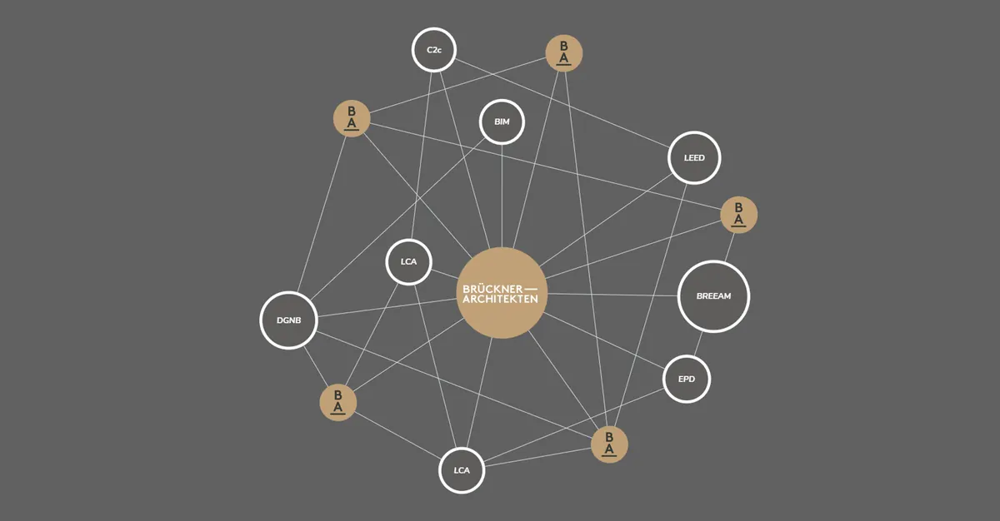
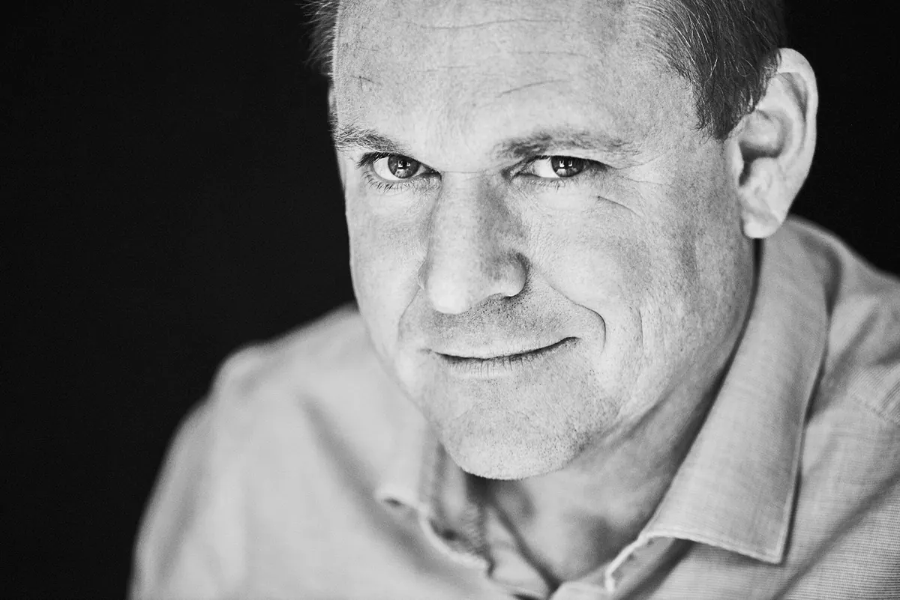
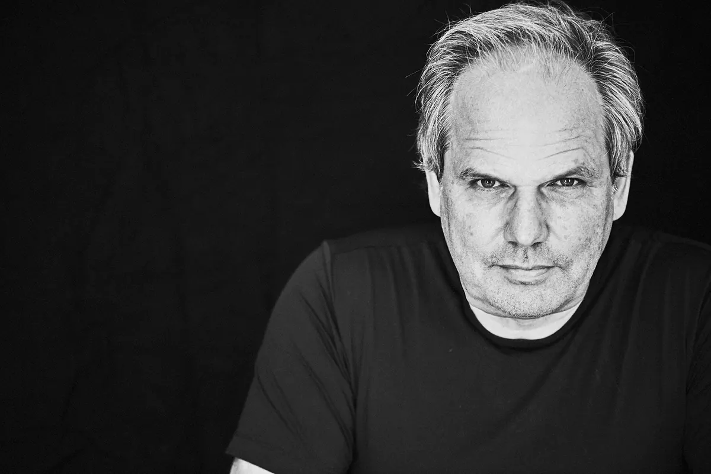

Nachhaltigin die Zukunft.ESG. Eine Antwortauf viele Fragen.
Wir entwickeln und nutzen in unserem Architektur Büro die neuesten digitalen und agilen Methoden, um Gebäude zu bauen und Entwürfe zu realisieren.
Umwelt, Soziales, Führung
Umwelt Soziales und Unternehmensführung
Ein ganzheitliches Nachhaltigkeitsmanagement umfasst Strategien und Maßnahmen, wie Unternehmen dieser Rolle gerecht werden und maßgeblich zum Erfolg der UN-Agenda für Nachhaltige Entwicklung und der Sustainable Development Goals (SDGs) beitragen können. In diesem Zusammenhang werden häufig zwei Begriffe verwendet: CSR (Corporate Social Responsibility) und ESG (Environment, Social and Governance). Beide Begriffe beziehen sich auf die Verantwortung von Unternehmen, sind aber nicht dasselbe. Während CSR ein eher normatives Konzept ist, das Unternehmen ethisch für ihr soziales Engagement zur Rechenschaft zieht, hilft ESG dabei, diese Anstrengungen zu messen oder zu quantifizieren. Verantwortliches unternehmerisches Handeln im Sinne von CSR bedeutet, dass Unternehmen freiwillig über gesetzliche Vorgaben hinaus in Humankapital, Umweltschutz und die Beziehung zu Stakeholdern investieren, um soziale, wirtschaftliche und ökologische Interessen in Einklang zu bringen. CSR ist also ein ethisch-normatives Konzept, das sich auf eine Idealvorstellung dessen bezieht, was Unternehmen tun sollten. ESG und auch die EU-Taxonomie versuchen, möglichst nachvollziehbare, zuverlässige und verständliche Anforderungen an die Nachhaltigkeitsperformance zu stellen, um Anlagekriterien für ökologisch nachhaltige Investitionen festzulegen. ESG ist mit konkreten Maßnahmen und messbaren Ergebnissen verbunden. Es kann vereinfacht als die quantitative Seite von Nachhaltigkeit betrachtet werden, während CSR die qualitative Seite darstellt. Mit ESG soll bewertet werden, wie gut ein Unternehmen seine CSR-Ziele erreicht. Brückner Architekten setzt sich dafür ein, Unternehmen dabei zu unterstützen, ESG-Prinzipien in ihr Nachhaltigkeitsmanagement zu integrieren und dadurch einen positiven Einfluss auf die Gesellschaft und die Umwelt auszuüben.
„ESG in der Architektur ist der Schlüssel, um nicht nur Gebäude zu gestalten, sondern Lebensräume zu schaffen, die im Einklang mit Mensch und Natur stehen.“
Laurent Brückner

Architektur und ESG
Architektur und ESG im Zweiklang
Wir bei Brückner Architekten übernehmen erheblich Verantwortung. Und zwar immer dann wenn es darum geht, nur jene Entwürfe in Betracht zu ziehen, die nicht nur unsere Kunden glücklich machen, sondern auch Menschen bzw. die Gesellschaft, die Fläche, Gebäude oder Räume nutzt bzw. von ihnen beeinflusst wird. Themen wie Architektur, soziale Inklusion, wirtschaftliche Möglichkeiten und allgemeine städtische Gerechtigkeit standen in den letzten Jahren immer wieder im Vordergrund und haben letztendlich einen neuen ganzheitlichen Ansatz für die Gestaltung einer besseren Zukunft geschaffen. Jedes unserer Architekturprojekt ist eine Kombination aus mehreren Interessen. Die Sicherstellung vollständiger Transparenz darüber, wie Ressourcen zugeteilt werden und wie ein Projekt voranschreitet, ist uns ein großes Anliegen. Die Tatsache, dass wir bei Brückner Architekten ESG berücksichtigen, bevor wir unsere Entwürfe überhaupt präsentieren – weil wir verstehen wie wir die daraus resultierenden Maßnahmen sinnvoll integrieren können – ist der erste und vielleicht wichtigste Schritt. Erfahren Sie mehr zu unseren aktuellen ESG Projekten:
esg baubranche, esg bau, esg kritierien gebäude, esg in der immobilienwirtschaft, esg in der immobilienbewertung, nachhaltigkeit architektur
was bedeutet nachhaltigkeit in der immobilienbranche?
Nachhaltigkeit in der Immobilienbranche zielt darauf ab, die Umweltauswirkungen von Bau- und Immobilienprojekten zu minimieren und gleichzeitig den sozialen und wirtschaftlichen Nutzen zu maximieren. Dies erfordert die Einhaltung von Kriterien für nachhaltige Aktivitäten und Taxonomiekonformität:
Klimaschutz Anpassung an den Klimawandel
Nachhaltige Nutzung und Schutz von Wasser- und Meeresressourcen
Übergang zu einer Kreislaufwirtschaft
Vermeidung und Verminderung der Umweltverschmutzung
Schutz und Wiederherstellung der Biodiversität und der Ökosysteme
„Es ist die Verbindung von Ästhetik und Verantwortung, die uns zu einer nachhaltigen und lebenswerten Zukunft führt.“
mICHAEL BREM

Brückner Architekten GmbH Gabriel-Max-Straße 4 81545 München
BRÜCKNERINNEN Interior
REON Realisierung
PROPERTYMAX Maximales Baurecht
TGA Süddeutschland GmbH
Rendeffect GmbH
Wir haben Ihr Interesse geweckt?
Sie haben Fragen oder wollen einen Termin mit uns vereinbaren?